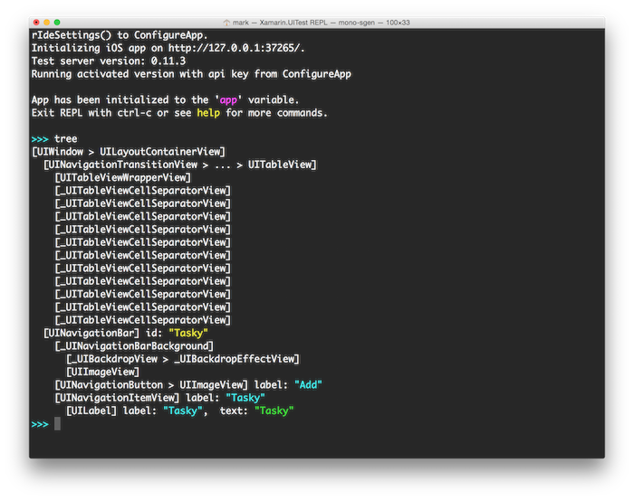
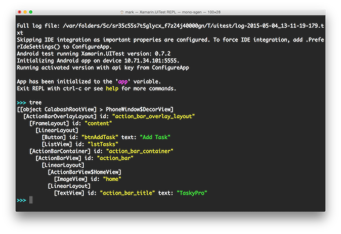

Duration
20 minutes
Goals
The primary goal of this exercise is to add to run a UITest against an existing application binary.
You will then launch the REPL using the Repl() command and query the UI to build a unit test.
Required Assets
There is a existing set of binary applications included with the lab materials in the Binaries folder. You will find TaskyPro for both Android and iOS. You will need to choose one of these applications to test against using either the iOS Simulator or an Android emulator. In addition, the source code has also been included in the TaskyPro folder - this will be used for an optional exercise. Finally, there is a completed project in the Exercise 2 folder.
You can continue from the previous exercise (using the Xamarin.UITest project you created), or generate a new one before starting the steps listed here.
Steps
Below are the step-by-step instructions to complete the exercise.
Configure the UITest to work with a pre-built application
The first step is to configure the Xamarin.UITest environment to connect to the application.
We will use the fluent API exposed by the ConfigureApp class to connect to a pre-built application binary.
-
Open AppInitializer.cs, this is where we need to add our configuration logic. This contains a single static method named
StartAppwhich is called before each test is executed. -
Complete the initialization code used to launch the application and connect it to Xamarin.UITest.
To prepare for future exercises, we will add the code for both iOS and Android.
-
For Android, use the
ConfigureApp.Android.ApkFilemethod. -
For iOS, use the
ConfigureApp.iOS.AppBundlemethod. - These methods take a file path to the executable to launch. You may need to adjust the path depending on where you have placed the lab files - verify that it correctly points at the executable you want to launch. You can either specify a full path or a relative path from your UITest project to the binaries.
-
Make sure you have the call to
StartApp(). - If the platform doesn't match iOS or Android, it will throw an exception. This should never happen since TestCloud (currently) only supports iOS and Android; if future platforms are introduced, we want to fail the test on unsupported platforms.
-
For Android, use the
Activate the REPL
Next, let's add some code to start the REPL so we can explore the UI of the application under test.
- Open the Tests.cs source file.
-
Comment out one of the
[TestFixture(...)]attributes on the class for the platform you do not want to execute. Having multiple attributes causes the test(s) in the class to be run multiple times - once per attribute, passing the platform flag to our initialization method. -
Locate the single test method - it is likely named
AppLaunches. Use theIAppinstance field to launch the REPL - you can either comment out or replace the existing code which takes a screen shot (we will cover this API a bit later in the class).
- For iOS, you can just launch the test - just like you would if you were running unit tests. For Android, make sure you start an Android emulator first so that the tests have a device to connect to. Also, for now, make sure to only have one device/emulator connected - otherwise the test must specify which device to run on.
- Run the test - it should launch the application and then show the REPL.
- If it does not, then check the results window. On Visual Studio for Mac, you can open the Unit Test Pad and right click on the failing test and use the Show Results option to display another window with the test results:
-
Once the REPL is running, issue the
treecommand to list the user interface controls on the application. - Enter the following statements into the REPL to add a "Get the milk" task using UITest:
- You should see these operations alter the user interface of the application.
-
Use the
copycommand to copy the REPL commands you entered to the clipboard. -
Finally issue the
treecommand again to see what the UI looks like now that we have a task.

For example, if an Android emulator is not running, then you will see the following error trying to run the Android tests:

iOS
Android
iOS
app.Tap(c => c.Button("Add"));
app.EnterText(c => c.Class("UITextField").Index(0), "Get Milk");
app.EnterText(c => c.Class("UITextField").Index(1), "Don't forget the milk!");
app.Tap ("Save");
Android
app.Tap("Add Task");
app.EnterText(c => c.Class("EditText").Index(0), "Get Milk");
app.EnterText(c => c.Class("EditText").Index(1), "Don't forget the milk!");
app.Tap ("Save");
Add a UI Test to add a task
Let's write a UI test which executes the commands you just typed into the REPL to add a task.
-
Go ahead and close the REPL window - this will end the tests and should stop the debugging session. Add the
[Ignore]attribute to theAppLaunchesmethod. We will be writing a real test now and don't need the REPL to launch each time, but it's handy to keep the code in the test fixture in case you ever want to run the REPL again. -
Create a new method to add a new task. Name it
AddANewTaskand have it take astring nameandstring description. - Paste in the commands you executed for either iOS or Android and update the statements to use your passed in parameters for the name and description of the task to create.
platform instance field and utilizing both of the code blocks above for iOS and Android. If you need some help with this, check the code hint below.
-
Next, create a new unit test method which will use our
AddANewTaskmethod to add a new item into TaskyPro.-
Call the
AddANewTaskMethodto add something to TaskyPro. - Use `app.WaitForElement(c => c.Marked("Get Milk"));` to verify that the task has been added to the UI - `WaitForElement` will wait a pre-determined time for an element to show up (30 seconds by default). If the element never shows, it throws an exception which will fail our test.
- We could also possibly use `Query` with an `Assert` and look for the UI element - however, the problem with this approach is that if the device is slower, the UI might not be visible yet and the test would arbitrarily fail even though it would pass if it ran a second later. In this sense, `WaitForElement` is a much better way to look for something on the screen.
-
Call the
- Run the new test - you can do this through the Unit Test Pad in Visual Studio for Mac, or through the Unit Test window in Visual Studio (if it's configured to support NUnit).
- You should see the app launch in your simulator/emulator (remember to launch the Android emulator first before running the test!) and it should add your task without you touching it.
Here's an example, feel free to modify this to be whatever you like:
[Test]
public void TaskyPro_CreatingATask_ShouldBeSuccessful ()
{
AddANewTask ("Get Milk", "Pick up some milk");
app.WaitForElement(c => c.Marked("Get Milk"));
}
(Optional) Add a Delete test
If you have some time, try adding a second test which deletes a named task in the list. To make it a valid test which does not rely on any others, you should add a new item, and then turn around and delete it and then verify that it is no longer in the list. Check the completed solution for an example of this.
(Optional) Configure the UITest to work with another project in the solution
Now that we've got a test, let's try connecting it to a project where we have access to the source code. The original TaskyPro source code is located here. For your convenience, it has been included in the TaskyPro folder with this lab. This version has been updated to simplify the project structure, remove the Windows project, and to use the same techniques shown in XAM160 for managing data. We recommend you use the included source, but you can try downloading the original if you prefer; just be aware it may have changed and therefore might require some changes to work properly with your tests.
- Close your UITest project. Since we only have one UITest project, but three projects for TaskPro, it's easier to add our tests to the TaskyPro solution.
- Open the TaskyPro.sln solution in TaskyPro folder.
- Now, add your UITest project to this solution by right-clicking on the solution node and selecting Add Existing Project. Locate the TaskyUITests.csproj file and select it.
- Expand your Packages folder in the UITest project, right-click and select Restore to make sure the configuration is properly refreshed for this solution.
-
Since we want to associate the other projects in this solution as our test apps, you should comment out the
ApkFileandAppBundlemethods from your AppInitializer.cs source file. The UITest system will pick up the app bundle/package from the target projects rather than having to hard code it in the test. - Open the Unit Tests Pad and expand the tests until you find the Test Apps node.
- Right-click on the Test Apps node and select Add App Project. In the resulting dialog, select the iOS and Android projects.
- In this case, the Xamarin Test Cloud agent has already been added to the iOS project and initialized for debug builds. If that were not the case, then the iOS application will not be available to the Add App Project dialog - it would not be selectable.
- Run your UITests for the related projects. Make sure to use Debug builds, particularly for iOS since the agent isn't included in the release build.
Summary
Congratulations, in this exercise you created and ran cross platform acceptance tests using Xamarin.UITest.